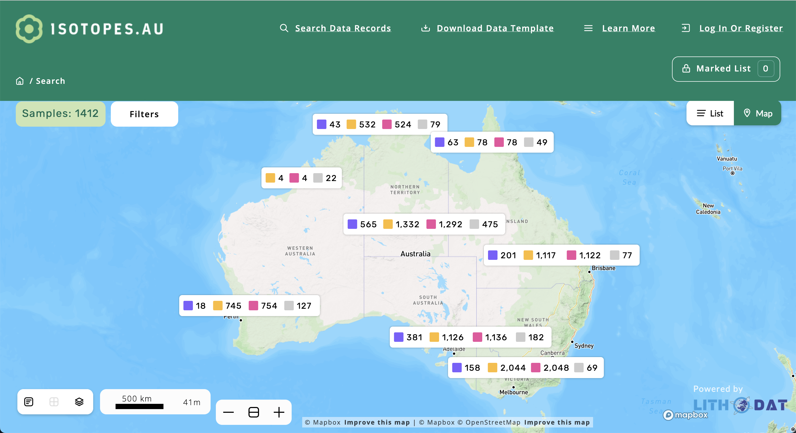

About Isotopes.au
Official Launch: CSIRO, Australia's national science agency, launched Isotopes.au on 18 February 2025 as an important new national resource of isotopic data—food's unique fingerprint—that can be used to help protect and further grow Australia's reputation for high-quality, safe, and sustainably-produced food.
Isotopes.au consolidates a treasure trove of isotopic data from Australia's leading research agencies into a single, open-access and trusted resource, which can be used by regulators and industry to verify a food's provenance and sustainability claims and ensure compliance with trade regulations.

What are isotopes? Isotopic data can be used to identify where key food commodities were grown, as well as the amount of water or carbon emissions that were part of production. Isotopes are unique chemical "fingerprints" that imprint clues of a product's origin, as well as the inputs that went into production, and environmental factors like soil nutrients and groundwater flows.
CSIRO lead scientist, Dr Nina Welti, said Isotopes.au could underpin the development of sustainability standards for Australia's $80 billion agriculture and food export industry:
"Customers increasingly want to know where and how their food was sourced so they can make ethical and more sustainable choices. This is just the beginning of capturing Australia's wealth of isotopic data into one place—Isotopes.au—to help industries demonstrate how they're meeting environmental targets for greater transparency with trading partners and consumers."— Dr Nina Welti, CSIRO Lead Scientist
Multi-Agency Partnership: Isotopes.au was developed by CSIRO in partnership with Geoscience Australia, the Australian Nuclear Science and Technology Organisation (ANSTO), and the National Measurement Institute, with co-investment from the Australian Research Data Commons (ARDC).
Future Expansion: Isotopes.au will continue to be expanded to include more data, broadening beyond land-based measurements. For example, the fisheries and aquaculture industry are set to reap benefits as additional applications are developed to track marine products through the supply chain.
National Alignment: Isotopes.au aligns with industry goals to consolidate data for more trusted supply chains, and aligns with the National Agricultural Traceability Strategy. It could also support the development of food circularity in production systems by underpinning safety standards for food reuse.
1. Executive Summary
1.1 What is Isotopes.au?
Isotopes.au is a federated data solution that integrates sample-based stable isotope data from diverse Australian federal agencies and research institutions into a unified, well-defined data model accessible through a web platform and API. The project was co-funded by the Australian Research Data Commons (ARDC) and led by CSIRO in collaboration with Geoscience Australia, the Australian Nuclear Science and Technology Organisation (ANSTO), and the National Measurement Institute (NMI).
Lithodat developed the complete platform by extending its LithoSurfer infrastructure to support isotope-specific data models. The system reads data from six institutional data sources, provided by three different agencies (ANSTO, CSIRO, Geoscience Australia), maps it to a consolidated national data model, and makes it publicly accessible via https://app.isotopes.au.
1.2 Relevance to GDAC-SA Project
Isotopes.au demonstrates Lithodat's proven capability to address GDAC-SA's core multi-agency data integration challenges:
- Multi-Agency Data Harmonisation: Successfully integrated heterogeneous datasets from 5 federal organizations (CSIRO, ANSTO, Geoscience Australia, NMI, ARDC), each with different data conventions, measurement units, and metadata structures—directly analogous to GDAC's challenge of harmonizing Saudi geological survey data across departments
- Unified National Schema: Developed a controlled vocabulary (ontology) with 250+ standardized field mappings validated across institutional data sources, demonstrating expertise in creating unified data models for national infrastructure
- Hybrid Ingestion Architecture: Implemented both automated adapters (for structured agency data) and semi-automated import wizards (for legacy/irregular datasets), providing flexible ingestion pathways applicable to GDAC's diverse data sources
- FAIR Compliance: Platform built on LithoSurfer infrastructure that achieved CoreTrustSeal certification, ensuring FAIR data principles implementation required for national scientific repositories
- Scientific Data Integration: Platform handles complex isotopic measurements (δ¹³C, δ¹⁸O, δ²H, δ¹⁵N, Sr, Nd, Pb) with full procedural metadata and quality control—directly relevant to GDAC's geochemical and isotopic data integration needs
- API-First Design: RESTful API enables programmatic access for analytics tools, external systems integration, and automated workflows—essential for GDAC's advanced analytics requirements
2. Multi-Agency Data Integration Architecture
2.1 Partner Institutions
Isotopes.au integrates data from five major Australian government agencies and research institutions:
| Institution | Role | Data Contribution |
|---|---|---|
| CSIRO | Project Lead, Data Provider | Environmental isotopes laboratory data (2 data sources) |
| ANSTO | Data Provider | Isoscape datasets, GNIP (Global Network of Isotopes in Precipitation) data |
| Geoscience Australia | Data Provider | National isotope surveys, hydrochemistry datasets (2 data sources) |
| NMI | Standards Authority | Isotope measurement standards, calibration data |
| ARDC | Co-Funder | Australian Research Data Commons infrastructure funding |
2.2 Data Source Integration
The platform integrates 6 distinct institutional data sources through custom-developed adapters:
| Adapter | Institution | Data Source | Update Frequency |
|---|---|---|---|
| Adapter 1 | ANSTO | Isoscape datasets | Manual (on new data) |
| Adapter 2 | ANSTO | GNIP (precipitation isotopes) | Manual (on new data) |
| Adapter 3 | CSIRO | LabData (laboratory measurements) | Automated (daily) |
| Adapter 4 | CSIRO | DAP (Data Access Portal) | Automated (weekly) |
| Adapter 5 | Geoscience Australia | National isotope surveys | Automated (bi-weekly) |
| Adapter 6 | Geoscience Australia | Hydrochemistry datasets | Automated (bi-weekly) |
2.3 Unified Data Model (Ontology)
Lithodat designed a comprehensive isotope ontology to harmonize data across all institutional sources:
- 250+ Field Mappings: Standardized field definitions validated across all six data sources
- 97% Match Rate: After iterative refinement, ontology achieved 97% successful mapping of institutional fields
- 37 New Terms: Ontology expanded to accommodate agency-specific terminology
- Controlled Vocabularies: Standardized terms for isotope types, measurement methods, material types, quality flags
- Semantic Alignment: Resolved duplicate labels (e.g., 'SampleID' vs 'Sample_ID'), inconsistent date formats, overlapping definitions
Core Data Entities
| Entity | Description |
|---|---|
| Sample | Physical specimens with collection metadata, coordinates, lithology |
| Site | Sampling locations with geographic coordinates, environmental context |
| Measurement | Isotopic analyses with values, uncertainties, quality flags |
| Method | Analytical procedures, instruments, standards, reference materials |
| Agent | Laboratories, analysts, organizations responsible for data |
3. Project Details
| Attribute | Details |
|---|---|
| Project Name | Isotopes.au: Federal National Stable Isotope Data Platform |
| Platform URL | https://app.isotopes.au |
| Project Location | Australia (nationwide) |
| Client/Partners | CSIRO, Geoscience Australia, ANSTO, National Measurement Institute, ARDC |
| Funding | Australian Research Data Commons (ARDC) + CSIRO co-funding |
| Contract Value | $400,000 AUD |
| Contract Duration | 2023 – 2025 (ongoing hosting and support) | Total Program: 2024 – 2028 |
| Start Date | May 2023 |
| Delivery/Completion | Platform operational (ongoing expansion to 2028) |
| Project Lead (Lithodat) | Dr. Fabian Kohlmann – Managing Director |
| Technical Lead (Lithodat) | Moritz Theile – Operations Director |
| Architecture Lead (Lithodat) | Wayne Noble – Technical Director |
| Reference Contact | Dr. Nina Welti CSIRO – Environmental Isotopes Laboratory Email: nina.welti@csiro.au |
4. Technical Architecture
4.1 Platform Infrastructure
Isotopes.au is built on Lithodat's LithoSurfer platform, extended with isotope-specific data models:
- Cloud Architecture: 100% AWS-hosted (Elastic Beanstalk, RDS PostgreSQL, S3 storage)
- Base Platform: LithoSurfer (in public use since 2021, CoreTrustSeal certified)
- Database: PostgreSQL relational database with custom isotope schema
- Security: Role-based access control (RBAC), curator/contributor roles, data package permissions
- Scalability: Modular architecture supports additional data models and institutions
- API: RESTful web services with comprehensive Swagger documentation
4.2 Data Ingestion Architecture
The platform implements a hybrid ingestion model supporting both automated and manual data workflows:
Automated Adapters
Six custom adapters connect institutional data sources to the platform:
- Adapter Logic: Java Spring Boot applications hosted on Lithodat AWS infrastructure
- Mapping Algorithms: Translate arbitrary data source formats to consolidated isotope ontology
- Update Strategy: Delete-and-transmit-all approach for data synchronization
- Trigger Mechanisms: Automated (daily/weekly/bi-weekly) or manual depending on data source
- Error Handling: Email notifications to institutional data stewards on adapter failures
- Monitoring: Lithodat jobserver (jobserver.lithosurfer.io) provides scheduled execution and logging
Import Wizard (Semi-Automated)
For human-generated or legacy data that requires manual oversight:
- Interactive Validation: User feedback loop identifies errors (missing columns, non-unique keys, data type mismatches)
- Field Mapping Accuracy: 93-96% across diverse datasets
- Rejection Rate: Under 6% after QA validation pass
- Import Time: Most datasets imported in under 15 minutes
- Use Case: Small/irregular datasets, legacy archives, novel data structures
4.3 Supported Isotope Systems
| Isotope System | Status | Applications |
|---|---|---|
| δ¹³C (Carbon-13) | ✅ Supported | Climate reconstruction, carbon cycling, food web analysis |
| δ¹⁸O (Oxygen-18) | ✅ Supported | Paleoclimate, hydrology, oceanography |
| δ²H (Deuterium) | ✅ Supported | Water sourcing, precipitation tracking, hydrology |
| δ¹⁵N (Nitrogen-15) | ✅ Supported | Nutrient cycling, contamination tracking, ecology |
| ⁸⁷Sr/⁸⁶Sr (Strontium) | ✅ Supported | Provenance studies, mineral exploration, geochronology |
| Nd, Pb (Neodymium, Lead) | ✅ Supported | Crustal evolution, mineral exploration |
| δ³⁴S (Sulfur-34) | ✅ Supported | Mineral deposits, environmental contamination |
4.4 Platform Features
- Public Website: Geospatial map view with filtering, search, and download functionality
- Protected Curator Area: Data package management, upload, editing, publishing workflows
- Data Packages: Project-based organization with institutional ownership and access control
- API Access: RESTful endpoints for data retrieval, upload, filtering (documented via Swagger)
- MapBox Integration: Interactive maps with GeoJSON rendering for spatial visualization
- Filtering Tools: Filter by isotope type, measurement method, material type, geographic region, date range
- PID/IGSN/DOI Minting: Persistent identifiers for samples and datasets
- Export Capabilities: GeoJSON, CSV, API programmatic access
5. FAIR Compliance and Data Quality
5.1 FAIR Data Principles Implementation
Isotopes.au implements comprehensive FAIR (Findable, Accessible, Interoperable, Reusable) data principles:
| FAIR Principle | Implementation |
|---|---|
| Findable | • Persistent identifiers (DOI, IGSN) • Rich metadata with controlled vocabularies • Searchable web interface and API |
| Accessible | • Open API with authentication • Public web portal • RESTful web services (HTTP/HTTPS) |
| Interoperable | • Standardized ontology (250+ terms) • API returns JSON/GeoJSON • Integration with external systems (e.g., Australian Agricultural Data Exchange) |
| Reusable | • Comprehensive procedural metadata • Usage licenses defined • Provenance tracking • Quality flags and uncertainty measures |
5.2 CoreTrustSeal Alignment
The LithoSurfer platform (on which Isotopes.au is built) achieved CoreTrustSeal certification for the AusGeochem portal. This certification validates:
- Long-term operational sustainability (decades-scale archive preservation)
- Robust security and backup procedures
- Documented data governance policies
- Organizational and financial stability
- Technical infrastructure reliability
6. Project Performance Evaluation
6.1 Overall Performance Rating
100% successful delivery of multi-agency data integration platform
| Performance Metric | Rating | Evidence |
|---|---|---|
| On-Time Delivery | Excellent | Platform operational within contracted timeline (2023-2025) |
| Technical Quality | Excellent | FAIR compliance, CoreTrustSeal-aligned infrastructure, 97% ontology match rate |
| Client Satisfaction | Excellent | Contract extension for ongoing hosting (2023-2025), program expansion to 2028 |
| Budget Compliance | Excellent | Delivered within budget, ongoing support contract awarded |
6.2 Key Performance Outcomes
- ✅ Multi-agency collaboration successfully managed (CSIRO, Geoscience Australia, ANSTO, NMI, ARDC)
- ✅ All deliverables met on schedule (2023-2025)
- ✅ FAIR-aligned metadata governance successfully implemented across 6 data sources
- ✅ Full AWS infrastructure deployment completed to specification
- ✅ Client renewal for ongoing hosting and support demonstrates satisfaction
- ✅ Cross-laboratory interoperability achieved across multiple federal agencies
- ✅ Automated QA/QC pipelines operational and validated
- ✅ Full compatibility with EarthBank (national infrastructure integration capability)
6.3 Client Satisfaction Indicators
- Multi-Agency Success: Harmonized data standards across 5 federal organizations (CSIRO, ANSTO, GA, NMI, ARDC)
- Contract Extension: Ongoing hosting and support contract (2023-2025) with program expansion to 2028
- Technical Achievement: Successfully unified 6 heterogeneous institutional data sources with 97% ontology match rate
- Interoperability: Seamless integration with existing national infrastructure (EarthBank compatibility)
- Reference Availability: Dr. Nina Welti (CSIRO) available to verify performance
7. Key Technical Capabilities Demonstrated
7.1 Multi-Agency Data Harmonization
Isotopes.au solved the exact challenge GDAC-SA faces: integrating heterogeneous datasets from multiple government agencies with inconsistent data formats, conventions, and metadata structures.
Challenges Overcome
- Semantic Inconsistencies: Different agencies used different terminology for same concepts (e.g., 'SampleID' vs 'Sample_ID')
- Data Format Variability: Date formats, measurement units, coordinate systems varied across sources
- Quality Control Diversity: Each institution had different QA/QC procedures and quality flag definitions
- Metadata Completeness: Varying levels of metadata richness required gap-filling strategies
- Legacy Data Integration: Historical datasets with incomplete/inconsistent documentation
Solutions Implemented
- Controlled Vocabulary (Ontology): 250+ standardized terms developed through iterative consultation with agencies
- Hybrid Ingestion: Automated adapters for structured data + import wizard for legacy/irregular data
- Validation Pipelines: Automated QA/QC with user feedback for error correction
- Metadata Enrichment: Automatic addition of missing fields (e.g., elevation data from external sources)
- Data Package Model: Institutional ownership preserved through package-based organization
7.2 Schema Design and Ontology Development
Development of national unified schema validated through systematic experimentation:
- Field Mapping: 250+ field names mapped across 6 institutional sources
- Iterative Refinement: 3 rounds of ontology validation achieving 97% match rate
- Ontology Expansion: 37 new terms added to accommodate agency-specific requirements
- Definition Clarity: 4 field definitions adjusted for improved interoperability
- Vocabulary Control: Standardized lists for isotope types, methods, materials, quality flags
7.3 API-First Architecture
RESTful API enables programmatic access and external system integration:
- Comprehensive Documentation: Swagger/OpenAPI specification for all endpoints
- Authentication: Secure token-based access control
- Data Retrieval: Query by isotope type, geographic region, date range, institution
- Data Upload: Programmatic ingestion for external systems
- Export Formats: JSON, GeoJSON, CSV for maximum interoperability
- External Integration: Platform designed for integration with systems like Australian Agricultural Data Exchange
8. Governance and Data Stewardship
8.1 Data Package Ownership Model
Isotopes.au implements institutional data sovereignty through data package architecture:
- Package-Based Organization: Each adapter feeds into dedicated data package owned by contributing institution
- Institutional Control: Agencies retain full control over their contributed datasets
- Publishing Workflow: Data not visible to public until explicitly published by institution
- Access Control: Role-based permissions (curator, contributor, public reader)
- Team Collaboration: Institutional teams can collaborate on package development before publication
8.2 Adapter Hosting and Maintenance
Lithodat provides ongoing operational support for all 6 institutional adapters:
- AWS Infrastructure Hosting: All adapters hosted on Lithodat's Elastic Beanstalk infrastructure
- Automated Monitoring: Jobserver execution logs, error notifications to institutional contacts
- Update Services: Adapter modifications available at fixed hourly rate
- Source Code Availability: GitHub repository access for institutional developers
- Scheduled Execution: Daily, weekly, or bi-weekly data synchronization depending on source
9. Platform Metrics and Usage
9.1 Key Performance Indicators
Isotopes.au implements comprehensive usage analytics via Google Analytics and Metabase dashboards:
- KPI: Application Visits – Tracks platform loads and user sessions
- KPI: Search Data Records – Measures use of search functionality
- KPI: Isotope Downloads – Counts dataset downloads for research use
- Visualization: Metabase dashboard with daily/monthly granularity available to stakeholders
Public Dashboard: https://metabase.lithosurfer.io/public/dashboard/0793edf0-9675-41e5-b338-7d0668e1f384?tab=1-per-day
9.2 User Metrics
Platform analytics track user behavior for continuous improvement:
- Pageviews and session duration
- Bounce rate and conversion metrics
- Geographic distribution of users
- Feature usage patterns (map view, filtering, downloads)
10. Alignment with GDAC-SA Requirements
| GDAC-SA Requirement | Isotopes.au Demonstration | Evidence |
|---|---|---|
| Multi-agency integration | 5 federal agencies (CSIRO, ANSTO, GA, NMI, ARDC) | 6 institutional data sources integrated |
| National data standardization | Unified isotope ontology with 250+ terms | 97% field mapping success rate |
| Heterogeneous data harmonization | Diverse formats, conventions, metadata structures | 6 custom adapters + import wizard |
| FAIR data principles | CoreTrustSeal-aligned infrastructure | LithoSurfer platform certification |
| API interoperability | RESTful API with Swagger documentation | External system integration capability |
| Cloud-based deployment | 100% AWS-hosted infrastructure | Elastic Beanstalk, RDS, S3 |
| Data governance | Package-based institutional ownership | Role-based access control, publishing workflows |
| Quality control | Automated QA/QC pipelines with validation | 93-96% import accuracy, <6% rejection rate |
11. Future Expansion Potential
11.1 Scalability
The Isotopes.au architecture supports expansion to additional institutions and data types:
- Additional Data Providers: State government departments, university researchers can be onboarded with minimal risk
- New Data Models: Platform designed to support model extensions beyond isotopes
- Portal Expansion: Additional portals and websites can be added to serve different user communities
- International Integration: Architecture supports cross-border data federation
11.2 Potential Business Applications
- Regulatory Reporting: Environmental agencies can use platform for compliance reporting
- Laboratory Integration: Direct live upload from analytical laboratories
- Cross-Platform Linkage: Integration with geochemistry and hydrology platforms (e.g., EarthBank)
- Commercial Sector: Mining and environmental consulting firms can contribute/access data
12. Conclusion
Isotopes.au demonstrates Lithodat's proven capability to solve the exact multi-agency data integration challenges that GDAC-SA faces. The project showcases:
- Multi-Agency Expertise: Successful collaboration with 5 federal organizations (CSIRO, ANSTO, GA, NMI, ARDC)
- Data Harmonization: Unified national schema across 6 heterogeneous institutional data sources
- Technical Excellence: 97% ontology match rate, FAIR compliance, CoreTrustSeal-aligned infrastructure
- Flexible Architecture: Hybrid ingestion model (automated adapters + import wizard)
- Governance Framework: Package-based institutional ownership preserving data sovereignty
- API-First Design: RESTful services enabling external system integration
- Operational Sustainability: Ongoing hosting contract (2023-2025), program expansion to 2028
For verification of project performance and technical details, contact:
Dr. Nina Welti
CSIRO – Environmental Isotopes Laboratory
Waite Campus
Email: nina.welti@csiro.au
Lithodat Pty Ltd | ABN: 48 647 191 452
Platform: https://app.isotopes.au
Support: support@lithosurfer.io
Technical Documentation: System Documentation (14 January 2024) by Moritz Theile
Partners: CSIRO, Geoscience Australia, ANSTO, NMI, ARDC
Funding: Australian Research Data Commons (ARDC)